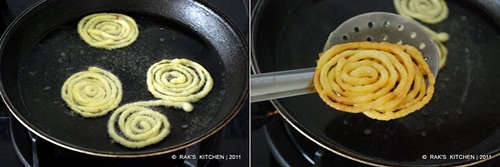
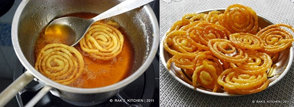
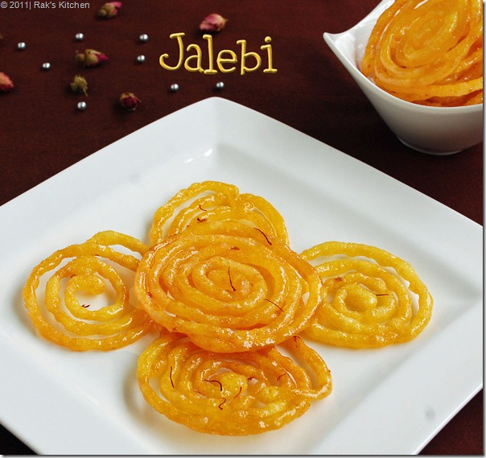

Gujarati Jalebi : Recipe, Ingredients, Tips and Pairing Ideas
STEPWISE PHOTOS
-
Mix maida, corn flour, cooking soda, ghee and yellow food colour in a bowl.
-
Add curd and make a thick batter by adding water carefully. Consistency should be like thick vada batter.
-
Keep it in a warm place for 12 hours/ overnight or until it ferments well.
-
Next day mix well with a ladle. It should be a sticky thick batter of dropping consistency.

-
In another stove, boil sugar with water,food colour, until one string consistency. Say 15 minutes in medium high flame.
-
Then add lemon juice, essence/elachi,saffron and keep in lowest heat possible.
-
In a flat bottomed pan, heat oil + ghee. Level should be very low as shown in the pic.
-
Take a cloth with a smallest hole in the middle or a durable Ziploc bag with hole in the middle.
-
Fill with the batter and draw circles in a medium heated oil. oil should never fume. Also it should be enough to fry the jalebis porous and crisp. So adjust the heat accordingly.
-
Make 3-4 circles per piece and end the circle by overlapping the tip when you end, otherwise the shape won't be good.

-
Fry on both sides till crisp and drain it and add immediately to the hot sugar syrup. Let it be dunked in the syrup for 2 minutes at least. After some time, drain it and arrange in a plate.

Enjoy hot jalebi or store in containers after cooled down, stays crisp for 4-5 days too.
